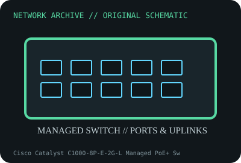

[ MODEL-SPECIFIC NETWORK HARDWARE ]
Cisco Catalyst C1000-8P-E-2G-L Managed PoE+ Switch
Eight-port managed Gigabit PoE+ switch with two SFP/RJ45 combo uplinks. Confirm exact product label and revision before applying specifications.

IDENTIFICATION: Confirm manufacturer PID, hardware revision, device ID or module suffix. Nominal standards/link rates are not measurements of payload performance.
Exact specifications and compatibility
| Dedicated subcategory | Managed switches |
|---|---|
| Exact product/model | Cisco Catalyst C1000-8P-E-2G-L Managed PoE+ Switch |
| Bus, ports and physical interface | Eight 10/100/1000BASE-T PoE+ RJ-45 access ports and two 1GbE SFP/RJ45 combo uplinks; PoE budget is PID-specific. |
| PHY, radio or protocol | Cisco Catalyst 1000 fixed Layer 2 switch running Cisco IOS; VLAN, QoS, ACL and PoE management depend on release/configuration. |
| Nominal rate (not measured) | Eight Gigabit access plus two Gigabit combo uplink interfaces; switching capacity is nominal aggregate and not benchmarked here. |
| Measured throughput | No measured benchmark is claimed for a physical specimen. A valid result must record host/peer, link partner, media/cable, driver/firmware, traffic pattern, test tool and duration. |
| Drivers, OS and firmware | Cisco IOS image, CLI/web and SNMP features; release support and end-of-sale status are model-specific. |
| Compatibility | Check exact PID, PoE budget, SFP/RJ45 combo use, power cord and current Cisco IOS support matrix. Combo ports share port resource. |
| Variant warning | C1000-8P-E-2G-L differs from C1000-8T-2G-L data-only and C1000-8FP variants; never infer PoE class/budget from chassis alone. |
Model and revision notes
C1000-8P-E-2G-L differs from C1000-8T-2G-L data-only and C1000-8FP variants; never infer PoE class/budget from chassis alone.
Cisco IOS image, CLI/web and SNMP features; release support and end-of-sale status are model-specific.
Check exact PID, PoE budget, SFP/RJ45 combo use, power cord and current Cisco IOS support matrix. Combo ports share port resource.
Archival, ESD and preservation notes
Record PID, serial, IOS, PSU, PoE budget, combo port configuration and SFPs. Remove power before cleaning and redact credentials from config backups.
Document source URL, access date, document revision and specimen label/condition. Preserve without credentials or private configuration.
Primary manufacturer and standards sources
- Cisco Catalyst 1000 Series official data sheetPrimary manufacturer or standards documentation; verify exact SKU and host revision.
- Cisco Catalyst 1000 support and softwarePrimary manufacturer or standards documentation; verify exact SKU and host revision.
- IEEE 802.3 Ethernet and PoE standardsPrimary manufacturer or standards documentation; verify exact SKU and host revision.
Manufacturer statements cover the named part or its documented product family; the exact labeled revision and vendor compatibility list take precedence.